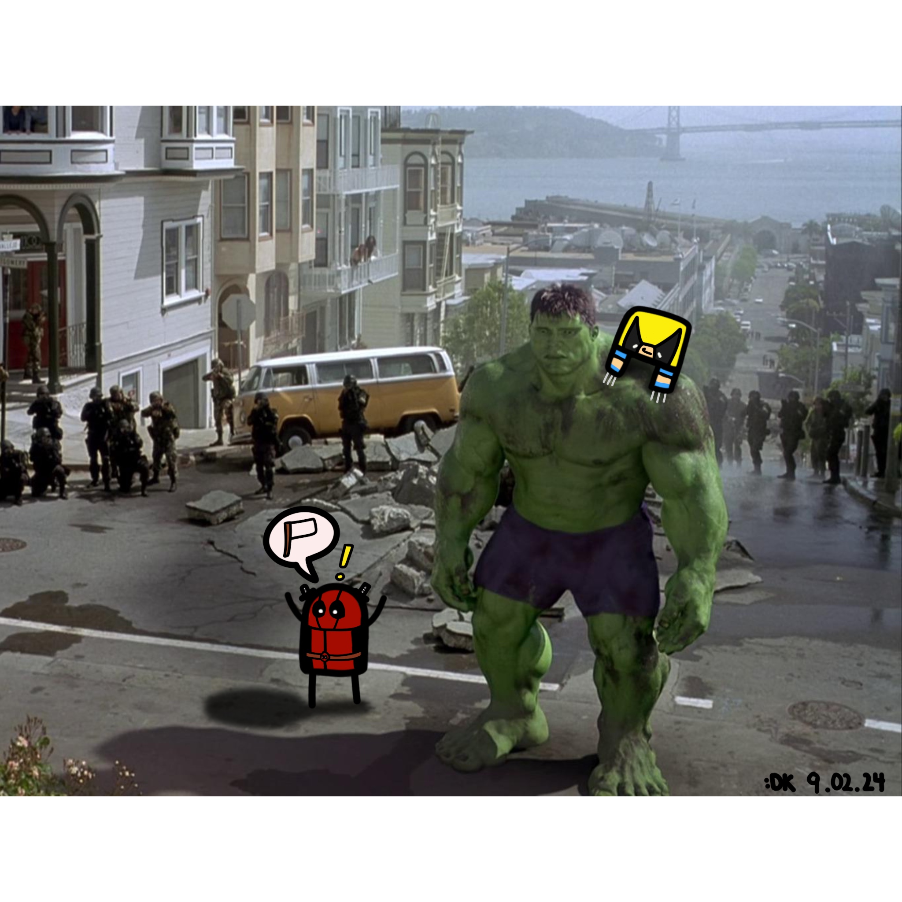

Most of this stretch went on work rather than my own projects. I got the opportunity to join PLUS QA, went through their process, and started there part time — which is the thing I had been hoping for.
Since then I have been across several projects, and the bigger shift has been learning traditional software testing properly: the process around it, not only the testing itself. My earlier roles were mostly exploratory, so that structure was the part I was missing, and picking it up has been the most useful thing to come out of these two months.
From there I moved onto the project I am on now, an enterprise cloud storage platform, as a QA Engineer and Jr. QA Lead. Most of my time goes to automation and to the test cases that define what coverage means for my area, which is a ton of fun. I have learned a lot already and I am hoping to keep going with it — there is more on it here.
The other change is that I have started pulling AI into my workflow. A few of the engineers here walked me through what they use it for, and honestly it is mind blowing at the moment. I have a backlog of projects I have been sitting on, so the plan is to point it at those and see what actually comes out.